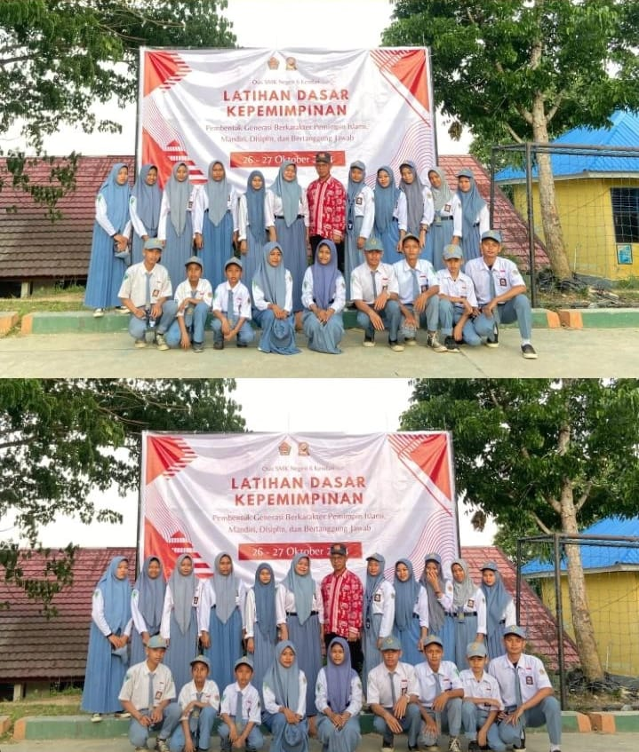
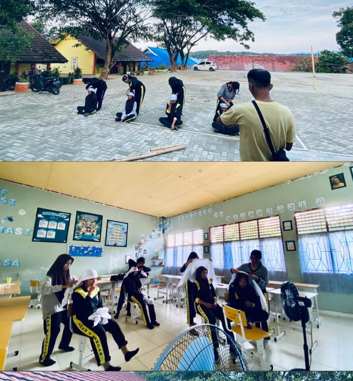
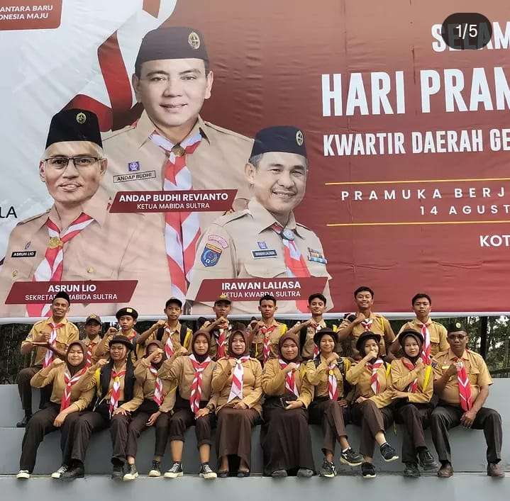
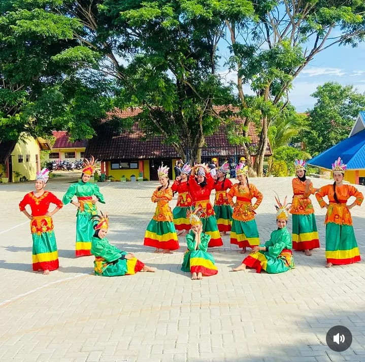
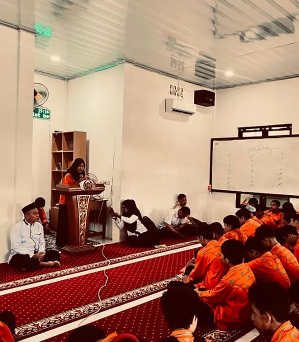
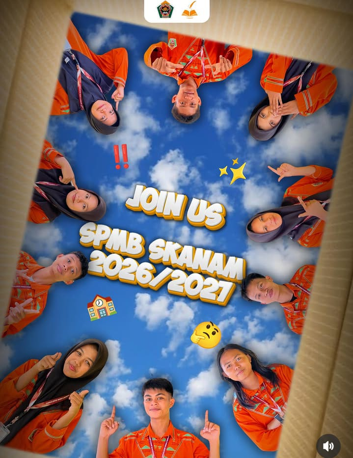
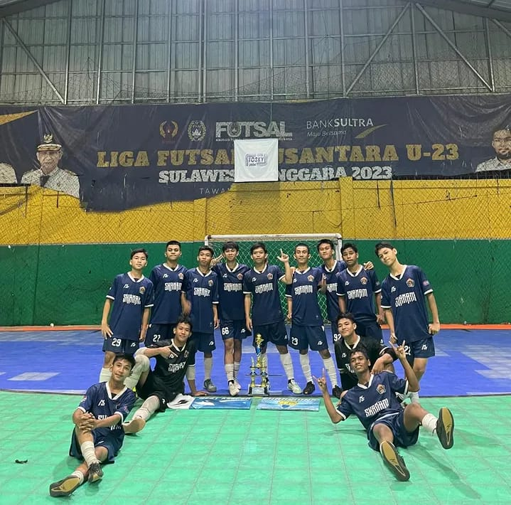
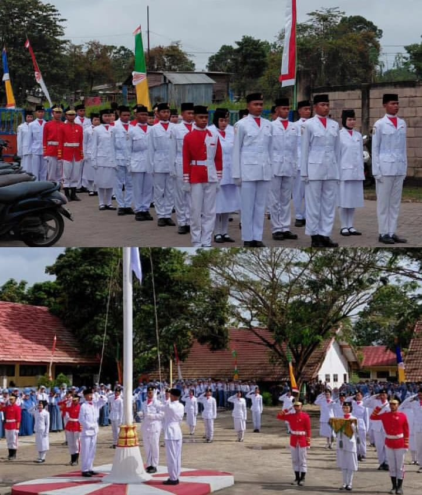

Berbagai kegiatan ekstrakurikuler yang dapat diikuti oleh siswa SMK Negeri 6 Kendari untuk mengembangkan bakat, minat, kreativitas, dan karakter.

Organisasi Siswa Intra Sekolah sebagai wadah pengembangan kepemimpinan, tanggung jawab, dan kemampuan berorganisasi siswa.

Palang Merah Remaja yang melatih kepedulian, kemanusiaan, kesehatan, dan kesiapsiagaan dalam membantu sesama.

Kegiatan kepanduan yang membentuk karakter, kedisiplinan, kemandirian, kerja sama, dan rasa tanggung jawab.

Wadah bagi siswa untuk mengembangkan kreativitas dan bakat seni melalui berbagai jenis tarian tradisional dan modern.

Kegiatan kerohanian Islam yang menjadi wadah pembinaan keagamaan dan pengembangan karakter siswa.

Mengembangkan kemampuan siswa dalam menulis, mencari informasi, membuat berita, dan menghasilkan karya jurnalistik kreatif.

Kegiatan olahraga yang melatih kebugaran, keterampilan bermain, kerja sama tim, sportivitas, dan disiplin.

Kegiatan yang melatih kedisiplinan, kekompakan, ketegasan, jiwa kepemimpinan, dan rasa cinta tanah air.